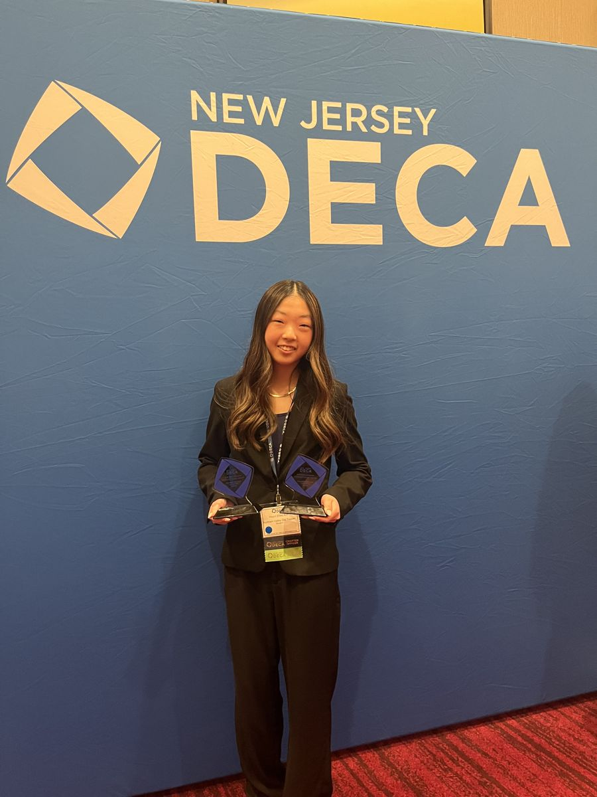
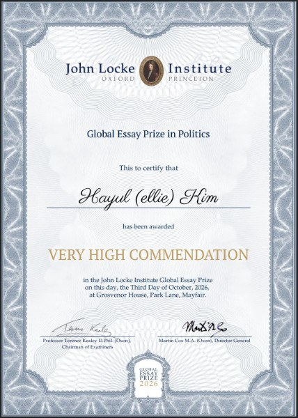
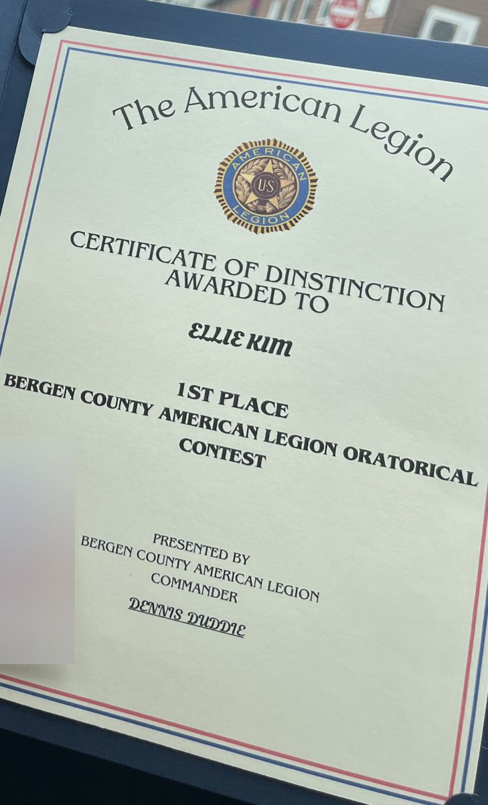
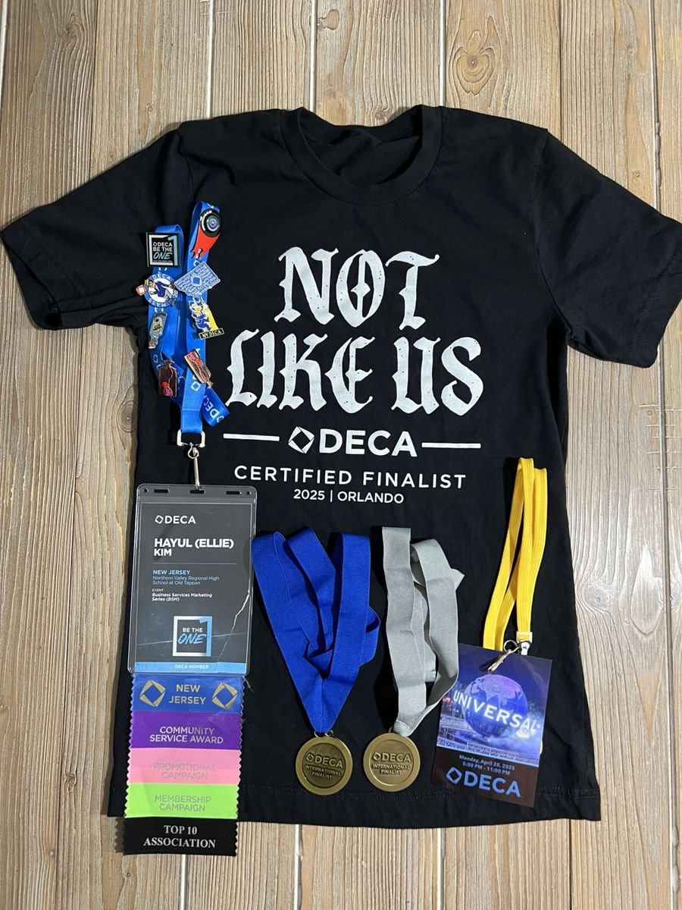
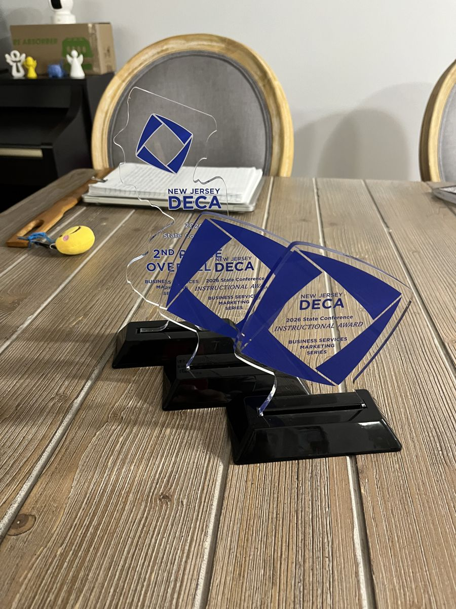
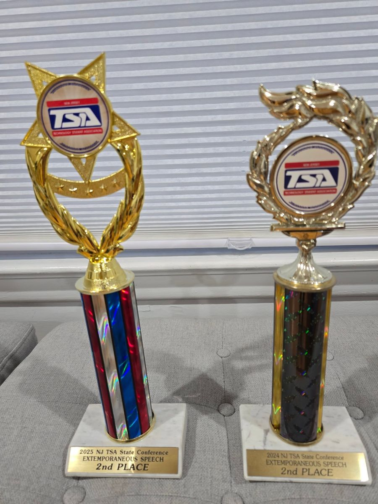

About
Three threads run through this page: competing in debate, teaching it to younger students, and working inside the offices that run local elections.
I am a senior at Northern Valley Regional High School at Old Tappan. This year I am taking AP English Literature, AP Spanish Language and Culture, AP Calculus AB, AP Macroeconomics, AP Microeconomics, AP Human Geography, and AP Environmental Science, after AP English Language, AP World History, AP US Government and Politics, AP Precalculus, and AP Research as a junior. I earned the AP Capstone Diploma, I scored a 1560 on the SAT, with a 790 in Math, and I was named a Semifinalist in the 2027 National Merit Scholarship Program.
Outside class I compete in Lincoln-Douglas debate and extemporaneous speaking, I teach debate to middle schoolers and to students learning English, and since grade 11 I have worked in county and town government: as a poll worker, as an intern at the Bergen County Board of Elections, and as a co-founder of the Bergen County Youth Assembly.
Debate and speaking
Four years of debate, on my school’s team and on my own on the national circuit.
NVOT Debate Team, varsity co-captain
Grades 9 to 12; co-captain in grades 11 and 12; Bergen County Debate League, policy debate
The team advisor chose me as co-captain through an application. I write coaching materials and lead weekly practices for five varsity teams and more than five JV teams. I brought back mandatory weekly practices. After a season with no varsity awards, our varsity teams won an award at 7 of 8 tournaments in 2025 to 2026, and our team finished second in Bergen County.
National circuit, Lincoln-Douglas and Extemporaneous Speech
Grades 9 to 12, including summers; competing without a club team since grade 11
I started in Public Forum, moved to Lincoln-Douglas in grade 10, and added Extemporaneous Speech in grade 11. I reached the top 8 of 85 at the Princeton Classic in 2024, and in 2025 I attended the National Symposium for Debate, a three-week residential camp, on a full scholarship.
American Legion Oratorical Contest
1st place in Bergen County, 2026; 4th place in New Jersey
Each speaker gives a prepared oration on the U.S. Constitution and then speaks on an assigned topic. I placed first in Bergen County and fourth in the state, which came with a $1,000 scholarship.
Teaching
Since grade 9 I have taught debate and public speaking to younger students in several separate programs.
Speech and Debate Library Summer Program, founder and instructor
Summers after grades 9, 10, and 11; more than 40 students
I started a public speaking and debate program at my local public library and wrote its curriculum for beginner and intermediate students. Each summer runs four weeks, with two one-hour classes a week, and I recruit students through four local middle schools. The program has had a waitlist every year. In the second summer I booked a larger room and added two teaching assistants. In the third summer I made the class smaller on purpose, so that every student got individual instruction.
Harrington Park Middle School Debate Team, volunteer coach
Grades 10 and 11; more than 25 debaters
My former middle school advisor asked me to help. I was the only coach with debate experience, so I taught research and case writing, moderated practice debates, and gave feedback at weekly meetings.
Eloquence Academy
Program Instructor, then Service Learning Fellow, now North Jersey Regional Director; grades 9 to 12
For three school years I taught a weekly English and debate class for ESL students, run with the Latino Education Advancement Fund, and adapted the debate lessons to each student’s level of English. As a fellow I won a $1,000 microgrant from the Karma for Cara Foundation and used it to create Exploring the Bioverse, a six-week online biology bootcamp for middle schoolers that I ran with four other high school students. As Regional Director, I am now reaching out to schools in North Jersey to start debate programs.
Women in Debate, Eastern Region Coordinator
Grades 11 and 12; national leadership board
With the Central and Western coordinators, I run the organization’s mentorship program. I review applications, make the mentor pairings, help lead onboarding for new mentors, and fix pairings that are not working. The program has more than 110 mentor pairs. I also co-founded the W.inners Win podcast, where I interview current and former board members.
Elections and civic work
Starting in grade 11, I worked inside the offices that run elections, and then used what I learned to help other students vote.
Before You Vote, a guide for first-time voters
Bergen County Youth Assembly, October 2026; reviewed by Bergen County election officials
I wrote an eight-page nonpartisan guide for Bergen County high school students. It covers who can vote, how to read a sample ballot, the three ways to vote, how local, county, state, and federal government divide their work, and how to get involved before turning 18. Every rule and date comes from an official source, and eight QR codes link to official election pages.
The Bergen County Board of Elections and the Bergen County Superintendent of Elections reviewed the guide in September 2026, and I made every correction they asked for. We donated 300 free copies. The Office of the Bergen County Clerk handed out 30 at its voter presentation at my high school, and 270 went to 10 public libraries in Closter, Fort Lee, Hackensack, Harrington Park, Leonia, Oradell, Palisades Park, Paramus, Ridgefield Park, and River Edge.
Read the guide (PDF)Bergen County Board of Elections, intern and poll worker
Intern, spring 2026; paid poll worker, November 2025 election and June 2026 primary
As an intern I processed hundreds of mail-in ballots, including signature checks, sorted ballots for counting, and organized poll worker records before Election Day. As a poll worker, trained through the Board’s high school program, I signed in voters and showed them how to use the voting machines.
Bergen County Youth Assembly, co-founder
Vice Chair and Director of Civic Engagement; active since November 2025, formally established July 11, 2026
I am one of six founders from six Bergen County high schools, and I am the group’s contact with the county election offices. On August 31, 2026, I presented our civic engagement work at our meeting with the Office of the Bergen County Executive.
Visit bcyouthassembly.orgLeague of Women Voters, intern and committee member
Grades 11 and 12; NJ Youth Committee and Government Committee
I contacted the League myself to ask how to get involved, and they offered me an internship and both committee seats. On the Government Committee I help decide which bills in the New Jersey Legislature the League supports.
NJ Youth Voices Project, co-founder
Started August 2026, with guidance from the League of Women Voters of New Jersey
A friend and I launched an exploratory statewide survey of civic attitudes among people ages 16 to 25. Four college partners and the NJ Youth Corps helped share it, and it has more than 138 responses from 14 of New Jersey’s 21 counties. We plan to publish a report of the findings with recommendations.
Harrington Park Borough Hall, student volunteer
July 14 to August 5, 2026; approved by the Mayor and Council in Resolution 2026-139
I asked the mayor about summer internships, and the mayor connected me to the Municipal Clerk. I organized and filed municipal records and tracked how long each type of record must be kept. I am also a member of the Harrington Park Youth Council.
Writing
Research on who was included in early American ideas of rights, an essay on politics, and a book series for young readers.
John Locke Institute Global Essay Prize, Very High Commendation
2026; Politics category; awarded October 3, 2026, at Grosvenor House, London
My essay in the Politics category received a Very High Commendation in an international competition that draws tens of thousands of entries each year.
“Rights for Whom? A Comparison Between Early America and First-Wave Feminism”
Published in the Curieux Academic Review, Humanities and Social Sciences, 2026 Issue Part 1
My paper begins on page 71 of the issue.
The Other Side, a picture book series
2026; seven books, illustrated by Cara Ko
I turned the beginner lessons from my library program into a series of picture books. Each book teaches elementary school readers to listen to a different point of view and to change their minds when they learn something new.
Leadership
Officer roles in school clubs and work with student-run organizations outside school.
DECA, Co-President
Vice President of Training and Development in grade 11; Co-President in grade 12
As Vice President I made a practice calendar for our 99-member chapter, started daily lunchtime practice sessions led by officers, and ran a “How to Roleplay” session. Our state conference qualifiers rose from 16 in 2025 to 32 in 2026. Now, as Co-President, I set the weekly agendas and assign the work for competitions, service events, and fundraisers.
I compete in Business Services Marketing. In 2025 I was an international finalist at the DECA International Career Development Conference, and in 2026 I placed second overall in New Jersey.

Model UN, Vice President and Senior Representative
Grades 9 to 12; officer in grades 11 and 12
In a club of more than 130 members, I help lead meetings and mentor members on procedure, position papers, and public speaking.
VOY (Voices of the Young), Director of Policy and Digital Strategy
2025 to present
I helped develop Mo Soop, an anonymous peer support app for teens, and Mo Ri, an app for students with ADHD. I research youth wellbeing issues to guide the apps’ content and oversee outreach campaigns.
Other commitments
- CDHW (Clothing Donations to Help Kids in the World), Operations Director since grade 9: I run the logistics for clothing drives that serve pediatric patients in New Jersey hospitals, and I led an effort to extend the service to foster care facilities.
- LiNK North Jersey Rescue Team, Director of Advocacy and Fundraising since grade 9.
- Technology Student Association, President in grade 11.
- Peer Mentor for incoming freshmen, grades 10 to 12.
- Chodae Community Church, every Sunday since grade 9: I help teach first and second graders and play flute in the Sanctus Orchestra.
Honors
- John Locke Institute Global Essay Prize, Very High Commendation in Politics, 2026
- American Legion Oratorical Contest, 1st place in Bergen County, 2026; 4th place in New Jersey
- Technology Student Association National Conference, 5th place in Extemporaneous Speech, 2025
- DECA International Career Development Conference, international finalist, Business Services Marketing, 2025
- DECA New Jersey State Career Development Conference, 2nd overall, 2026
- Presidential 1776 Civics Award, National Semifinalist
- National Merit Scholarship Program, Semifinalist, 2027 program
- Princeton Classic, Lincoln-Douglas, top 8 of 85, 2024
- Global Citizens Open Innovation SDGs Challenge, Champion, 2024
- AP Capstone Diploma; National Honor Society

John Locke Very High Commendation 
American Legion, Bergen County 
DECA international finalist 
NJ DECA, 2nd overall 
NJ TSA Extemporaneous Speech
Contact
- ellie.kim@example.com
- Location
- Bergen County, New Jersey
- Voter guide
- Before You Vote (PDF)
- The Other Side
- Book 1 on Amazon
- Mo Soop
- mo-soop.glide.page
- Mo Ri
- mo-ri.glide.page
- Youth Assembly
- bcyouthassembly.org